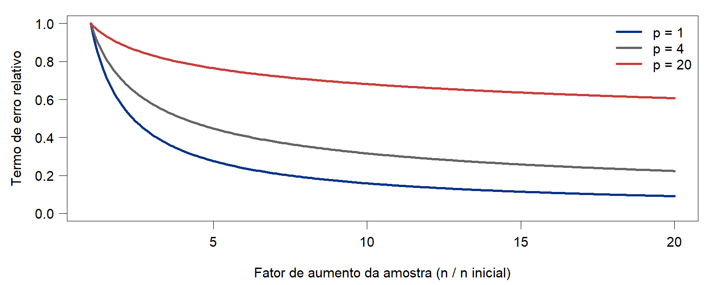
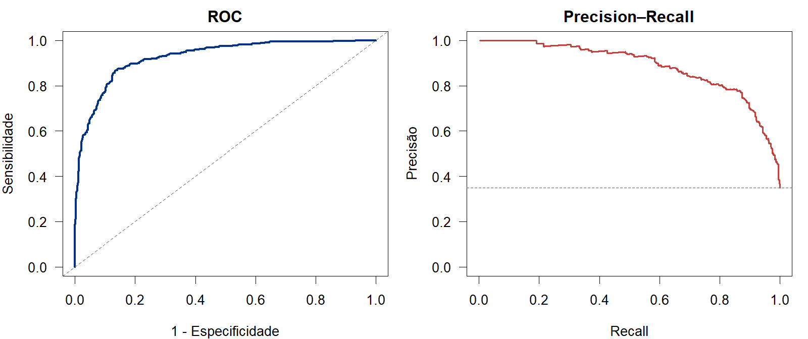
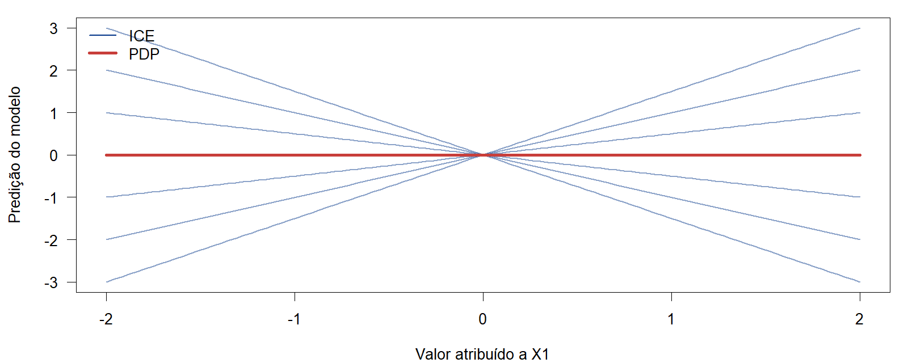

Alta Dimensão, Decisão, Avaliação e Interpretabilidade
Queremos aprender a relação
\[ Y=f(\mathbf X)+\varepsilon,\qquad \mathbf X\in\mathbb R^p, \quad \mathbb E(\varepsilon\mid\mathbf X)=0, \]
utilizando \(n\) observações e \(p\) variáveis de entrada.
Com muitas entradas, precisamos de dados suficientes para distinguir o sinal do ruído. A dificuldade pode aparecer mesmo quando \(p<n\).
Percurso: estimar em alta dimensão, explorar estrutura e regularização, decidir com custos, avaliar e interpretar o modelo.
Imagine observações uniformes em \([0,1]^p\). Uma região com comprimento \(h\) em cada coordenada ocupa a fração \(h^p\) do volume.
Para manter \(k\) observações em média nessa região:
\[ \boxed{nh^p=k\quad\Longrightarrow\quad n=\frac{k}{h^p}.} \]
| Com \(h=0{,}2\) e \(k=20\) | \(p=1\) | \(p=3\) | \(p=5\) |
|---|---|---|---|
| Amostra necessária, em média | 100 | 2.500 | 62.500 |
Manter vizinhanças pequenas exige muito mais dados. Isso afeta especialmente KNN e regressão local.
Esta conta ilustra cobertura do espaço sob uniformidade. Não é uma regra geral de tamanho amostral.
O risco de estimação pode ser medido por
\[ R_n=\mathbb E[(\hat f_n(\mathbf X)-f(\mathbf X))^2], \]
com esperança sobre o treinamento e uma nova entrada. Ele não inclui o ruído irredutível da resposta.
Como ilustração, se \(R_n\approx Cn^{-a}\), então \(R_{4n}/R_n\approx4^{-a}\). \(C\) é uma constante de escala, \(a\) é o expoente e 4 é o fator de aumento da amostra.
| Expoente | Erro relativo | Redução ilustrativa |
|---|---|---|
| \(a=1\) | \(0{,}25\) | 75% |
| \(a=1/2\) | \(0{,}50\) | 50% |
| \(a=1/6\) | \(0{,}79\) | 21% |
O modelo de potência não é universal. Uma relação de ordem \(R_n\asymp n^{-a}\), sozinha, não garante esses percentuais.
Para classes gerais de funções suaves em \(p\) dimensões, uma taxa minimax típica do erro quadrático integrado é
\[ \boxed{R_n^*\asymp n^{-\frac{2\alpha}{2\alpha+p}}.} \]
Aumentar \(p\) reduz o expoente e torna a aprendizagem mais lenta.
A taxa exige condições sobre a classe de funções, o desenho e o ruído. Mede estimação de \(f\), sem incluir o ruído irredutível de uma nova resposta.
Fixando suavidade \(\alpha=2\), a taxa é \(n^{-4/(4+p)}\).
| Dimensão \(p\) | Taxa | Fator do termo principal com \(4n\) |
|---|---|---|
| 1 | \(n^{-4/5}\) | \(0{,}33\) |
| 4 | \(n^{-1/2}\) | \(0{,}50\) |
| 10 | \(n^{-2/7}\) | \(0{,}67\) |
| 20 | \(n^{-1/6}\) | \(0{,}79\) |
Em uma dimensão, o termo cai para cerca de 33% do valor anterior. Em 20 dimensões, permanece em cerca de 79%.
Para reduzir esse termo à metade em \(p=20\), seria necessário multiplicar \(n\) por \(2^6=64\). São comparações da taxa dentro de cada cenário, sem considerar diferenças nas constantes.

Todas as curvas começam em 1 para comparar velocidades de redução, não níveis absolutos de erro. São curvas teóricas com \(\alpha=2\), sem resultados de ajuste a dados.
A taxa anterior considera uma classe ampla de funções em \(p\) dimensões.
Podemos explorar hipóteses que reduzam a complexidade relevante:
| Hipótese | Ideia | O que procuramos |
|---|---|---|
| Esparsidade | Poucas entradas são necessárias à função de regressão | Selecionar efeitos relevantes |
| Redundância | Muitas entradas carregam informação compartilhada | Combinar ou representar informação comum |
Ter muitas variáveis observadas não implica que a resposta dependa de todas de forma independente e complexa.
Suponha \(p=1.000\), mas
\[ Y=3X_2-2X_{17}+1{,}5X_{204}+\varepsilon. \]
A função de regressão utiliza apenas \(s=3\) entradas: \(s\ll p\).
Se soubéssemos quais são, o ajuste seria muito mais simples. Como não sabemos, precisamos encontrá-las entre as 1.000 candidatas.
Lasso pode explorar esparsidade dos coeficientes. A hipótese também pode ocorrer em funções não lineares, mas lasso nas entradas originais representa apenas efeitos lineares.
Esparsidade do modelo significa poucos efeitos ativos, sem exigir muitos zeros na matriz de dados.
Imagine 100 sensores que medem uma condição térmica comum:
\[ X_j=a_jZ+\eta_j,\qquad j=1,\ldots,100. \]
\(Z\) é a condição compartilhada, \(a_j\) é a sensibilidade do sensor e \(\eta_j\) é o ruído específico da medição.
As entradas podem ser fortemente correlacionadas. Se \(Y\) depende principalmente de \(Z\), a informação preditiva está associada a uma estrutura simples.
Ridge pode estabilizar o uso conjunto dessas medições. Uma RNA pode aprender combinações, mas precisa de dados e controle de complexidade.
Com ruído em todos os sensores, a estrutura de baixa dimensão é aproximada. Remover medições também pode eliminar informação útil.
| Aspecto | Esparsidade | Redundância |
|---|---|---|
| Estrutura | Poucos efeitos necessários | Informação compartilhada |
| Exemplo | Três entre 1.000 entradas | 100 sensores de um fator |
| Estratégia | Selecionar ou contrair efeitos | Estabilizar ou combinar medições |
| Cuidado | Achar quais efeitos importam | Preservar o sinal para \(Y\) |
As duas hipóteses podem coexistir: muitos grupos de entradas semelhantes, mas apenas alguns grupos relacionados à resposta.
Uma combinação preditiva de dimensão um pode usar todas as entradas. Dimensão pequena não exige coeficientes esparsos na representação original.
Na regressão linear esparsa, sob condições adequadas, limites de erro preditivo incluem termos da ordem
\[ \boxed{\sigma^2\frac{s\log p}{n}.} \]
Isso ajuda a entender por que aprender com \(p>n\) pode ser viável.
A expressão não determina uma amostra mínima universal. Correlação, intensidade do sinal e precisão desejada também importam. Prever bem e identificar exatamente as entradas ativas são objetivos diferentes.
Ridge minimiza o erro de ajuste acrescido de uma penalização quadrática:
\[ \sum_{i=1}^{n}(y_i-\beta_0-\mathbf x_i^\top\boldsymbol\beta)^2 +\lambda\sum_{j=1}^{p}\beta_j^2. \]
Quando considerar: entradas correlacionadas ou sinal distribuído por muitos efeitos pequenos.
Para \(\lambda>0\), o critério produz coeficientes únicos mesmo com \(p>n\), no ajuste com intercepto separado.
A penalização estabiliza o ajuste, mas geralmente mantém todos os coeficientes. Uma solução única não garante boa predição: \(\lambda\) precisa ser escolhido por validação.
Lasso substitui a penalização quadrática pela soma dos valores absolutos:
\[ \sum_{i=1}^{n}(y_i-\beta_0-\mathbf x_i^\top\boldsymbol\beta)^2 +\lambda\sum_{j=1}^{p}|\beta_j|. \]
Quando considerar: poucos efeitos aproximadamente lineares na representação utilizada.
O critério favorece coeficientes exatamente iguais a zero, podendo reduzir o conjunto de entradas utilizadas.
Com entradas fortemente correlacionadas, a escolha de variáveis pode mudar entre amostras. Selecionar uma variável não prova que ela seja a única portadora do sinal.
A SVM linear utiliza uma função de decisão
\[ g(\mathbf x)=\mathbf w^\top\mathbf x+b \]
com controle da magnitude de \(\mathbf w\) e penalização das violações da margem.
Quando considerar: classificação com muitas entradas e uma fronteira linear plausível, inclusive em problemas com \(p>n\).
O parâmetro \(C\) equilibra regularização e violações da margem. Deve ser escolhido por validação, com padronização quando apropriada.
Um kernel não linear pode ampliar a flexibilidade, mas distâncias pouco informativas não passam a ser úteis apenas pelo uso do kernel.
Uma camada oculta calcula
\[ \mathbf a^{(1)}=\phi(W^{(1)}\mathbf x+\mathbf b^{(1)}). \]
Ela pode combinar entradas redundantes e representar relações não lineares.
Quando considerar: estrutura não linear que possa ser aprendida com os dados disponíveis, arquitetura adequada e regularização.
Uma RNA não é automaticamente uma boa escolha para \(p\gg n\). Com amostra pequena, ridge e lasso são referências importantes para comparação.
| Situação | Método estudado a considerar |
|---|---|
| Muitas entradas correlacionadas ou muitos efeitos pequenos | Ridge |
| Poucos efeitos lineares relevantes | Lasso |
| Classificação com fronteira aproximadamente linear | SVM linear regularizada |
| Relações não lineares e dados suficientes para aprendê-las | RNA regularizada |
A tabela orienta comparações, sem definir um vencedor universal.
Procedimento essencial: estimar padronização, seleção e hiperparâmetros dentro do treinamento/validação. Reservar o teste para a avaliação final.
Em alta dimensão, regularizamos para aprender com os dados disponíveis. Depois do ajuste, ainda precisamos responder:
| Etapa | Pergunta |
|---|---|
| Predizer | Qual resposta ou probabilidade o modelo estima? |
| Decidir | Que ação tomar diante dessa predição? |
| Avaliar | Como o procedimento funciona em dados novos? |
| Interpretar | Como o modelo produz suas predições? |
Bom ajuste, boa decisão e boa explicação são propriedades diferentes.
Na classificação binária, defina \(\eta(\mathbf x)=P(Y=1\mid\mathbf X=\mathbf x)\).
Com custos iguais para os dois tipos de erro, a regra de Bayes escolhe
\[ g^*(\mathbf x)=I\{\eta(\mathbf x)>0{,}5\}. \]
Na prática, substituímos \(\eta\) pela probabilidade estimada \(\hat\eta\) e escolhemos um cutoff \(c\):
\[ \hat g_c(\mathbf x)=I\{\hat\eta(\mathbf x)>c\}. \]
Mudar \(c\) altera as classes previstas, sem alterar as probabilidades do modelo. Mesmo a regra ótima erra quando as classes se sobrepõem:
\[ R_{\mathrm{Bayes}}=\mathbb E[\min\{\eta(\mathbf X),1-\eta(\mathbf X)\}]. \]
Sejam \(C_{FP}\) o custo do falso positivo e \(C_{FN}\) o custo do falso negativo. Acertos têm custo zero.
\[ R(1\mid\mathbf x)=C_{FP}[1-\eta(\mathbf x)], \qquad R(0\mid\mathbf x)=C_{FN}\eta(\mathbf x). \]
Escolher a ação de menor risco equivale a decidir 1 quando
\[ \boxed{\eta(\mathbf x)>c^*=\frac{C_{FP}}{C_{FP}+C_{FN}}.} \]
Exemplo: \(C_{FP}=1\) e \(C_{FN}=9\) dão \(c^*=0{,}10\). Uma probabilidade de 0,20 já justifica a decisão positiva.
A regra pressupõe probabilidades populacionais adequadas e custos constantes. Aplicá-la a \(\hat\eta\) requer atenção à calibração, especialmente após reamostragem ou ponderação de classes.
| Classe observada | Predito 1 | Predito 0 |
|---|---|---|
| 1 | Verdadeiro positivo (VP) | Falso negativo (FN) |
| 0 | Falso positivo (FP) | Verdadeiro negativo (VN) |
| Métrica | Expressão | Pergunta |
|---|---|---|
| Sensibilidade ou recall | \(VP/(VP+FN)\) | Quantos positivos encontramos? |
| Especificidade | \(VN/(VN+FP)\) | Quantos negativos reconhecemos? |
| Precisão | \(VP/(VP+FP)\) | Quantos alertas estão corretos? |
Reduzir o cutoff aumenta ou mantém a sensibilidade e reduz ou mantém a especificidade, no mesmo conjunto de escores. Precisão depende também da prevalência.
Se apenas 2% das observações pertencem à classe 1, prever sempre 0 produz 98% de acurácia, mas sensibilidade zero.
Duas outras medidas são
\[ \operatorname{Balanced\ Accuracy} =\frac{\operatorname{Sensibilidade}+\operatorname{Especificidade}}{2}, \]
\[ F_1=\frac{2VP}{2VP+FP+FN}. \]
A primeira dá peso igual ao desempenho nas duas classes. A segunda combina precisão e recall, sem usar diretamente os verdadeiros negativos.
A métrica deve refletir o objetivo. Nenhuma dessas medidas representa automaticamente o custo real da decisão.
Ao variar o cutoff, obtemos:
| Curva | Eixo horizontal | Eixo vertical |
|---|---|---|
| ROC | \(FPR=1-\text{especificidade}\) | \(TPR=\text{sensibilidade}\) |
| Precision–Recall | Recall | Precisão |
A AUC-ROC mede ordenação:
\[ \operatorname{AUC}=P(S_1>S_0)+\tfrac12P(S_1=S_0), \]
com escores de observações positivas e negativas independentes. A parcela final trata empates.
AUC não avalia calibração nem determina cutoff. Em classes raras, a curva PR evidencia a proporção de alertas corretos e depende da prevalência.

Escores simulados com 35% de positivos. A linha horizontal em PR marca essa prevalência. As curvas descrevem ordenação, sem garantir que os escores sejam probabilidades calibradas.
| Intervenção | O que modifica | Exemplos |
|---|---|---|
| Dados de treinamento | Composição da amostra | Oversampling, undersampling, SMOTE |
| Função objetivo | Peso dos erros no ajuste | Pesos de classes e custos |
| Decisão final | Conversão do escore em ação | Alteração do cutoff |
Reamostrar não equivale a mudar apenas o cutoff. Pode alterar o modelo e a interpretação de suas probabilidades.
Dentro de cada divisão de validação: ajustar seleção, padronização e eventual reamostragem apenas no treino. Escolher hiperparâmetros e cutoff usando treino/validação. Preservar o teste e sua distribuição para a avaliação final.
Hard voting: combinar as classes previstas por maioria, com regra de desempate definida.
\[ g_{\mathrm{ens}}(\mathbf x)=\operatorname{moda}\{g_1(\mathbf x),\ldots,g_M(\mathbf x)\}. \]
Soft voting: combinar probabilidades de classes na mesma escala:
\[ \bar p_k(\mathbf x)=\sum_{m=1}^{M}w_m\hat p_{mk}(\mathbf x), \quad w_m\geq0,\quad \sum_mw_m=1. \]
A combinação pode ajudar quando os erros dos modelos diferem. Pesos e escolha de componentes pertencem à validação. Fazer a média não garante calibração nem melhor desempenho.
Com custos iguais, escolher a maior probabilidade é natural. Com custos assimétricos, aplicar a regra de decisão correspondente.
Interpretação global: descrever o comportamento geral do modelo.
Interpretação local: compreender uma predição específica.
Em alta dimensão, três cuidados são centrais:
Nos próximos slides, \(\hat g\) representa a saída numérica que queremos explicar: resposta prevista, escore ou probabilidade de uma classe especificada.
Para estudar a entrada \(X_j\), substituímos seu valor por \(t\) em todas as observações e calculamos a média das predições:
\[ \boxed{\hat h_j(t)=\frac1N\sum_{i=1}^{N}\hat g(t,\mathbf x_{i,-j}).} \]
\(\mathbf x_{i,-j}\) contém as demais entradas da observação \(i\). \(N\) é o tamanho da base usada como referência para a explicação.
Leitura: se o PDP cresce, as predições médias do modelo aumentam nas combinações consultadas.
Isso não é, em geral, \(\mathbb E(Y\mid X_j=t)\) nem um efeito causal. Com entradas dependentes, pode consultar combinações pouco representadas nos dados.
Em vez de calcular primeiro a média, traçamos uma curva para cada observação:
\[ \hat h_{j,i}(t)=\hat g(t,\mathbf x_{i,-j}). \]
A média dessas curvas, na mesma base de referência, é o PDP:
\[ \boxed{\hat h_j(t)=\frac1N\sum_{i=1}^{N}\hat h_{j,i}(t).} \]
Curvas com inclinações ou formas diferentes mostram heterogeneidade no comportamento do modelo e podem revelar interações.
ICE também pode criar combinações pouco plausíveis quando alteramos uma entrada e mantemos as correlacionadas fixas.

Modelo ilustrativo \(\hat g(x_1,x_2)=x_1x_2\), sem ajuste a dados. O PDP horizontal esconde a interação: o sentido da variação depende de \(x_2\).
Para explicar a saída em \(\mathbf x^*\), o LIME:
\[ q^*=\arg\min_{q\in\mathcal G} \{\mathcal L(\hat g,q,\pi_{\mathbf x^*})+\Omega(q)\}. \]
\(\mathcal L\) mede fidelidade local, \(\pi_{\mathbf x^*}\) define os pesos e \(\Omega\) penaliza a complexidade da explicação.
A explicação descreve uma aproximação do modelo perto de um ponto. Ela depende da vizinhança, da geração de perturbações e da representação utilizada.
Imagine entradas quase equivalentes, como duas medições do mesmo sensor.
PDP e ICE: variar uma mantendo a outra fixa pode gerar situações fora da região observada.
LIME: perturbar as duas independentemente pode criar vizinhos artificiais. Muitos preditores também tornam a noção de proximidade menos informativa.
Lasso: selecionar uma medição e descartar outra não prova que apenas a selecionada tenha importância substantiva.
Antes de interpretar, examine suporte dos dados, estabilidade e fidelidade. Uma explicação convincente não substitui desempenho fora da amostra.
| Etapa | Pergunta central |
|---|---|
| Estimar em alta dimensão | Que estrutura reduz a complexidade relevante? |
| Decidir | Que ação minimiza o custo esperado? |
| Avaliar | Que métricas representam o objetivo em dados novos? |
| Interpretar | A explicação é fiel e usa combinações plausíveis? |
Esparsidade e redundância afetam todo o processo: a estimação, a estabilidade das variáveis selecionadas e a confiabilidade das explicações.
O objetivo é obter predições úteis, decisões justificadas e explicações compatíveis com o que os dados permitem concluir.